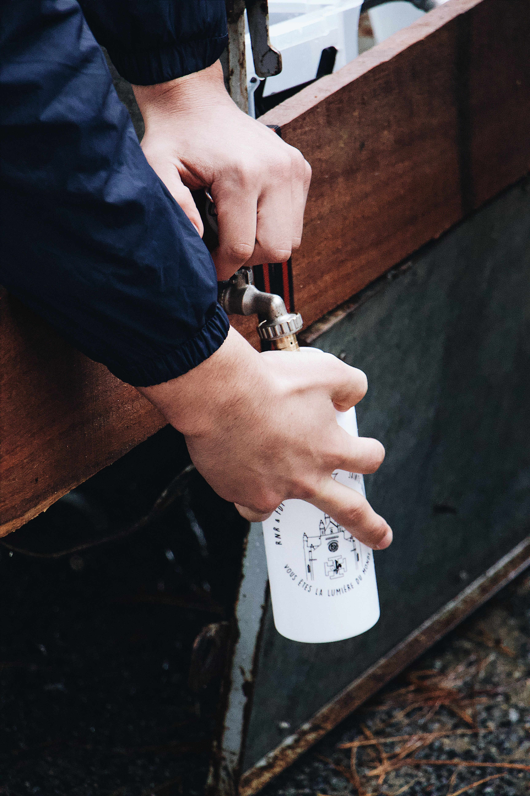
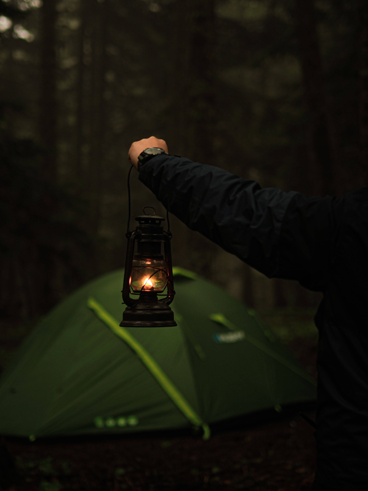
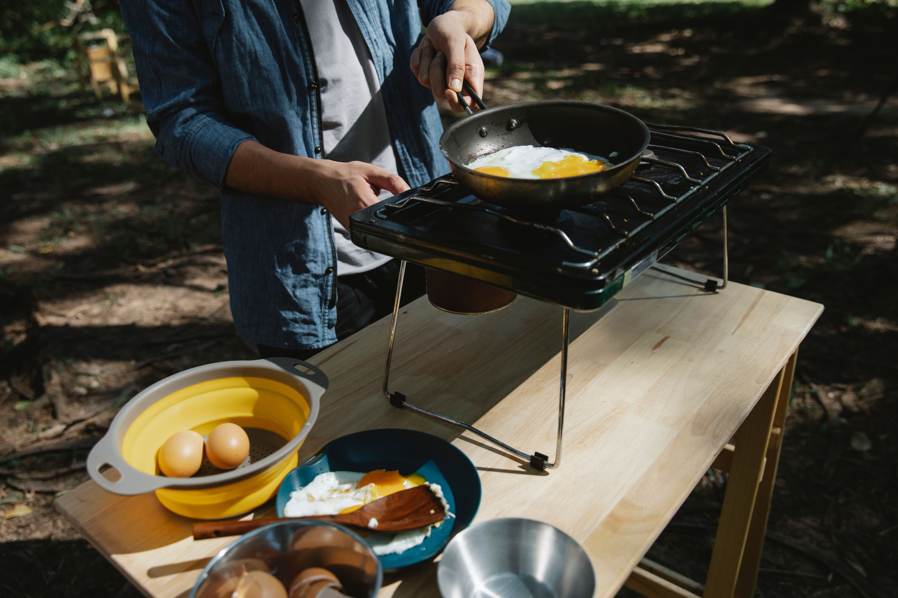

Essential Sustainable Gear
Choose reusable and durable equipment to reduce waste and make your outdoor adventure more eco-friendly.

Eco Camping Tent
Choose durable tents and take care of them to reduce unnecessary waste.

Reusable Water Bottle
Carry a refillable bottle and reduce single-use plastic during your trip.

Solar Lantern
Use rechargeable or solar-powered lights for your campsite.

Reusable Essentials
Bring reusable plates, cutlery and bags to reduce disposable waste.